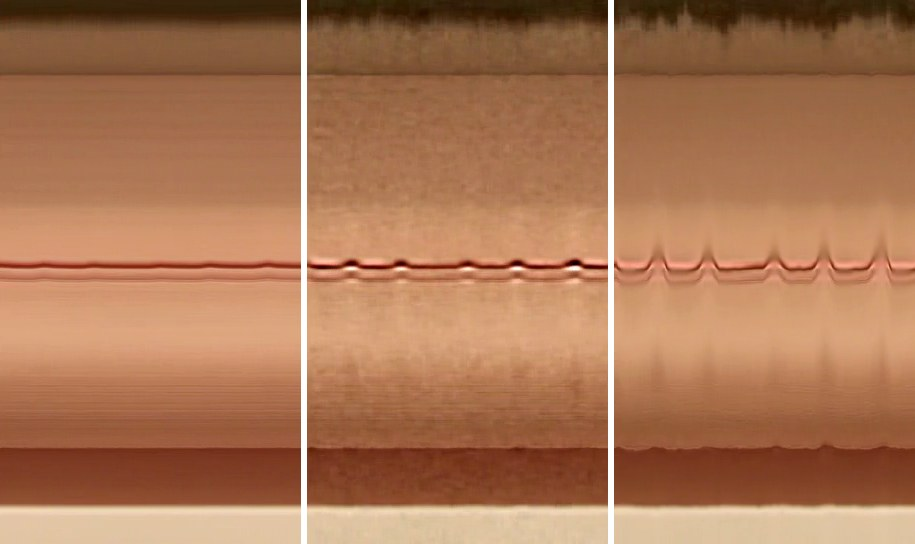

Eulerian video magnification · October 2026
Your skin flushes a little with every heartbeat. A sleeping baby's chest rises by a fraction of a pixel. A video records both, and your eyes see neither. This is how I made a laptop show them, live.
The signal
Blood flowing into the skin changes its colour, mostly in the green channel, by tiny amounts. In MIT's reference face clip, the average green of the skin moves by about half a grey level out of 255. On a normal scale it is a flat line; zoom in two hundred times and the heartbeat is there, buried in noise.
Real data: mean green of the forehead and cheeks in MIT's face clip, 10 s at 30 fps. Rows: as recorded on the 0–255 scale; the same zoomed in; band-passed to the pulse frequencies; added back, multiplied.
The trick
Wu and colleagues at MIT had a simple idea in 2012. Don't track objects. Treat every pixel as a time series, keep only the frequencies you care about, make them bigger and add them back. Because it looks at fixed places rather than moving things, they called it Eulerian, after the way fluid dynamics describes flow.
Everything runs locally on the CPU with NumPy, SciPy and OpenCV. At 640 pixels wide it takes about 10 ms a frame for colour and 13 ms for motion, so a live 30 fps camera keeps up.
Reading the heartbeat
To read the rate, the forehead and cheeks are averaged every frame and turned into a pulse wave with the POS method (Wang et al., 2017), which is robust to lighting and small movements. The strongest frequency between 42 and 210 bpm is the heart rate. On the MIT clip it reads 52.7 bpm; the paper reports 50 to 60.
Real data from the same clip. Top: the POS pulse wave. Bottom: its spectrum between 42 and 210 bpm; the dot marks the peak.
Why the textbook version fails live
Plain EVM amplifies everything in the pulse band. On a live webcam, a small head movement at about 1 Hz is in that band and is far stronger than the pulse, so it explodes into blotches of colour. My first live test looked exactly like that.
The fix uses the pulse itself as a reference. The face's pulse wave is computed live, and every pixel keeps a running regression against it over about three seconds. Only the part of each pixel that follows the heartbeat is amplified. Movement and noise don't follow it, so they drop out, and so do background and hair. A sudden jump pauses the learning for about a second.
Motion
For motion, the original method amplifies intensity changes. It works for tiny movements, but as α grows the edges grow halos and the noise grows with them. The phase-based method (Wadhwa et al., 2014) measures where each edge is, using a Riesz pyramid, and moves the edge itself. Try it: the bar below really moves 0.25 px.
Simulation of one row of pixels. Top: as filmed. Middle: linear magnification, brightness change × α, clipped to the screen range. Bottom: phase magnification, the edge moved × α.
On MIT's sleeping-baby clip, the zipper of the onesie sways 0.4 px. I measured how far it moves after magnification and how much a still patch of blanket flickers:
Sway of the zipper line (px)
Noise in a still area (grey levels)

Space-time slices: one column of pixels across the chest, stacked over time from left to right. Each bump is a breath.
In practice
The same code runs on clips, on the webcam, or on any stream (an RTSP camera, say), and can serve the result to a browser. With Tailscale, I can watch it on my phone. Keys switch between colour and motion, the method, the gain and the view: side by side, magnified, original, or a heat map where every pixel shows how much it pulses in step with the face. Skin lights up; moving edges, strong but out of step, stay dark.
References: Wu, Rubinstein, Shih, Guttag, Durand & Freeman, Eulerian Video Magnification for Revealing Subtle Changes in the World, SIGGRAPH 2012 · Wadhwa, Rubinstein, Durand & Freeman, Riesz Pyramids for Fast Phase-Based Video Magnification, ICCP 2014 · Wang, den Brinker, Stuijk & de Haan, Algorithmic Principles of Remote PPG (POS), IEEE TBME 2017. Test clips: MIT's reference videos.